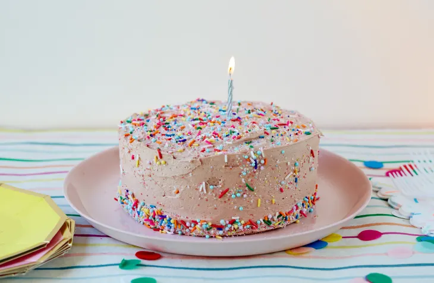

Recette de gateau au chocolat
Ingrédients
- 200g de chocolat noir
- 100g de sucre
- 3 oeufs
- 100g de farine
- 100g de beurre
- 1 cuillére à café d'extrait de vanille
- 1 pincée de sel
Etape
- préchauffer le four à 180°C(350°F).
- faire fondre la chocolat et le beurre au bain-marie.
- mélanger la sucre et les oeufs jusqu'à obtenir une texture mousseuse.
- ajouterr la farine. l'extrait de vanille et la pincée de sei au mélange.
- incorporer le mélange de chocolat fondu.
- verser dans un moule beurré et fariné.
- cuire au four pendant 20-25 minutes. vérifier la cuisson avec un couteau.
- laisser refroidir avant de démouler et de servir.
Photo et Video
